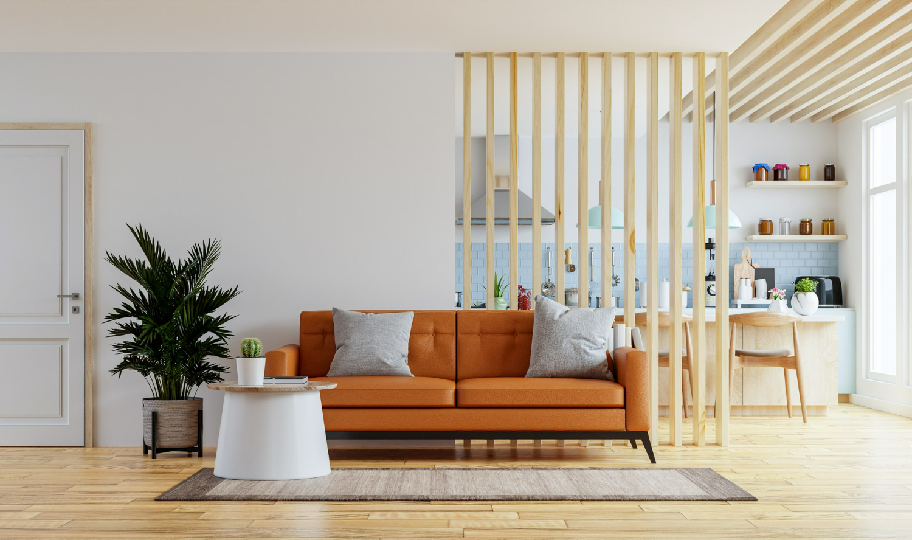
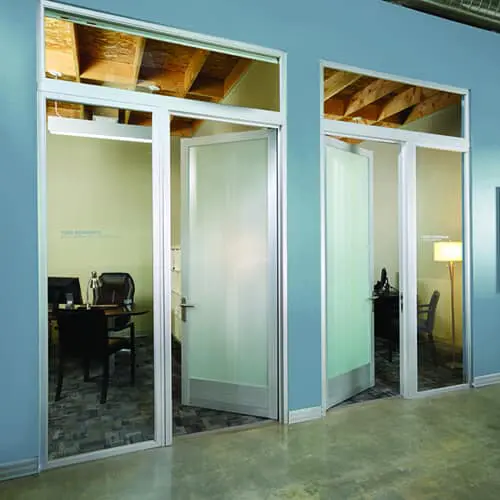

Products & Services We Offer
Exploring Possibilities:
Our Diverse Range of Glass Products Welcome to our Products Page, where innovation meets functionality and design takes center stage. Here, you'll find an exquisite selection of glass solutions that cater to a variety of needs and aspirations. From the practical to the awe-inspiring, our products are crafted to enhance spaces and elevate experiences.STRUCTURAL GLAZING
-
Facade Glazing
Facade glazing, also known as curtain wall glazing, is a specialized architectural technique that involves the use of glass panels to create the external envelope or skin of a building's facade. This technique allows for the creation of expansive, transparent surfaces that provide a range of benefits in terms of aesthetics, energy efficiency, and functionality.


-
Canopy Glazing
Canopy glazing refers to the use of glass or transparent materials in the construction of canopies or overhead structures that provide shelter, protection, and architectural enhancement. Canopies with glazing are often installed at entrances, walkways, outdoor seating areas, and other spaces where weather protection and aesthetic appeal are desired.


-
Skylight Glazing
Skylight glazing refers to the use of transparent materials, such as glass or polycarbonate, in the construction of skylights. A skylight is a window or opening that is installed on the roof or upper part of a building to allow natural light to enter interior spaces. Skylights with glazing are designed to maximize the amount of sunlight that can penetrate into a building


CURTAIN WALLS
-
Conventional Fully Unitized Glazing
Conventional Fully Unitized Glazing, also known simply as "fully unitized glazing," is a method of installing curtain wall systems in building facades. Curtain wall systems are non-structural, exterior cladding systems that consist of panels (often made of glass) that are attached to the building's structural frame. Fully unitized glazing refers to a specific approach within the realm of curtain wall installation.


-
Conventional Semi Unitized Glazing
A type of structural glazing where the primary structural framing components are erected individually as an erector set. In this set, the vertical mullions are attached first to the floor slabs and the horizontals are attached to the vertical mullions to resemble a grid. The glass panel and the spandrel, which can be either glass or aluminum, are shop glazed and installed into the assembled grid work. The joineries and perimeter sealants are field installed. The semi unitized systems are largely anchored to the face of the slab as embedded plates or inserts.


SPIDER GLAZING
-
Spider Glazing System:
Spider Glazing is a part of the frameless glass system where they provide a flush external appearance with uninterrupted views. Spider Glazing curtain walls provide maximum daylight for building interiors, as well as the possibility of placing large transparent glass surface as building envelopes. Due to its visual attractiveness, such architectural building envelopes are commonly used on commercial buildings to create premium building skills. A wide variety of applications are available, including curtain walls, canopies, and atriums, allowing maximum transparency and brightness optimization and unique design.


Shop Fronts
-
Glass Canopies
A glass canopy provides an attractive and practical feature to a building. Typically placed outside entrance doors, a canopy protects people entering the building, keeps the weather away from the doors, and allows natural light through to the entrance area. This feature can carry through, providing a sightline past an entrance into a lobby area. While clear glass is a popular choice, other glass options are not excluded. Entrance canopies are overhead glazing by definition, and the selection of an impact-resistant durable product is essential.


-
Structural Glass Fin System
A Structural Glass Fin System is a type of architectural design and construction method that involves using glass fins as load-bearing elements within a building's facade. These fins provide both structural support and aesthetic enhancement to the building's exterior. The system relies on the strength and durability of glass to create transparent or semi-transparent surfaces while maintaining the structural integrity of the building.


-
Point Fixing Facade
Point-fixing facade, also known as point-supported facade or spider glass facade, is a modern and architecturally striking method of constructing building envelopes using glass panels. In this system, glass panels are supported by a network of discreet, high-strength point-fixing hardware, typically in the form of glass fin or spider fittings. These fittings are attached to the building's structure, creating a minimalist and transparent appearance.


-
Tension Rod System
A tension rod system, also known as a tension cable system or tensile structure, is a construction method that relies on tensioned cables or rods to support and stabilize architectural elements. These systems are widely used in modern architecture for a variety of applications, including roofing, canopies, bridges, and facades. The primary feature of a tension rod system is its use of tension forces to resist loads, creating lightweight and visually striking structures.


ALUMINIUM & OTHER WALL CLADDINGS
-
ACP Cladding
ACP is a building cladding material commonly used in internal and external wall systems for its light weight, durability, and structural performance. ACP Cladding systems consist of ACP panels that are typically 4mm to 6mm thick and consist of a core material sandwiched between two thin layers of aluminium. The core material is generally 3mm to 5mm thick with the aluminium sheets each at 0.5mm thick.


-
HPL Cladding
HPL (High-Pressure Laminate) cladding refers to a type of exterior or interior cladding material used in construction and architecture. HPL cladding is known for its durability, versatility, and aesthetic appeal.


-
WALL Cladding (Sheets, Composite & Wooden Panels)
Wall cladding refers to the process of covering the exterior or interior walls of a building with a material that serves both functional and aesthetic purposes. Cladding is used to protect the underlying structure from environmental elements, enhance insulation, and provide an attractive finish. There are various types of wall cladding materials available, each with its unique characteristics and applications.


ALUMINIUM & UPVC-DOORS & WINDOWS
-
Sliding Doors & Windows
Sliding doors are a type of door that open horizontally by sliding along a track or rails rather than swinging open like traditional hinged doors. They are popular for various reasons, including their space-saving design, modern aesthetic, and versatility.


-
Casement Windows
Casement windows are a type of window that is hinged on one side and opens outward like a door, typically operated with a hand crank. They are one of the most popular window styles and are commonly used in both residential and commercial buildings.


-
French Windows, ETC.
French windows, also known as French doors or French-style doors, are a type of door or window configuration that is characterized by large glass panels with multiple individual panes or divisions (muntins) set within a wooden or metal frame. These windows or doors are designed to allow an abundance of natural light into a space and provide an elegant and classic look.


Aluminium Doors & Windows
Aluminium doors and windows are popular building components known for their durability, versatility, and contemporary appearance. They are widely used in residential, commercial, and industrial construction projects.


UPVC Doors & Windows
UPVC (unplasticized polyvinyl chloride) doors and windows are popular building components known for their energy efficiency, durability, low maintenance, and versatility. They are widely used in residential, commercial, and industrial construction projects.


Foldable Glass Doors
Foldable glass doors, also known as folding glass doors, bi-fold doors, or accordion doors, are a type of door system that consists of multiple glass panels hinged together. These panels fold and slide to open or close, creating a seamless transition between indoor and outdoor spaces.


FRAMELESS GLASS APPLICATIONS
-
Glass Doors Shower Cubicles
Bathrooms now come in all shapes and sizes, and as per people's tastes and needs, it varies considerably, especially when looking for a new shower. Kwality Glass offers a top range of quality showers in different looks and features, allowing you to pick the one that suits perfectly for you and your home.


-
Interior Partitions
Interior partitions, also known as room dividers or interior walls, are architectural elements used to divide and separate spaces within a building's interior. These partitions can serve various purposes, including creating privacy, defining functional areas, enhancing aesthetics, and improving the overall layout and flow of a space.  -
Glass Sliding System
A glass sliding system, often referred to as a sliding glass door or sliding glass wall system, is a type of architectural element that incorporates large glass panels within a sliding framework. These systems are designed to offer unobstructed views, natural light, and a seamless transition between indoor and outdoor spaces.


-
Glass Folding Systems
A glass folding system, also known as a folding glass door or folding glass wall system, is an architectural element that utilizes multiple glass panels connected by hinges to create a flexible and versatile opening. These systems are designed to provide unobstructed views, maximize natural light, and create a seamless transition between indoor and outdoor spaces.


-
SS Glass Railings
Glass Railing Systems are sleek and sophisticated. They provide excellent wind barriers while still allowing optimal visibility from your deck or balcony. All of our Glass Railing Systems receive durable powder-coated finishes. Available in a number of tints, glass panels are excellent for exterior decks, balconies, and stairs, yet sleek and elegant for interior railings.


WE ALSO PROVIDE A WIDE VARIETY OF INTERIOR GLASS PRODUCTS SUCH AS
-
Lacquered Glass
Lacquered Glass is manufactured by depositing and baking a lacquer coating on one side of the base glass, usually clear glass. The lacquer gives it a colored and opaque appearance, bringing an element of vibrancy to any interior application. Unlike Back Painted Glass (BPG) available in the market, the lacquered finish protects the glass from damage, making it highly durable. Lacquered glass contains very minimal amounts of VoCs, and therefore is not only safe to use but also does not harm the environment. It is humidity-resistant and also scratch-proof.


-
Laminated Glass
Laminated Glass is a safety and security glass that is made by sandwiching a laminated sheet between two pieces of glass. The laminated sheet is a polyvinyl butyral (PVB) sheet that helps in sticking the glass pieces to itself even when the glass is broken. This unique property makes laminated glass an ideal choice for applications where safety is paramount, as it reduces the risk of shattering and enhances security by maintaining the integrity of the glass even after impact.


-
Quality Showers For Your Bathrooms
Bathrooms now come in all shapes and sizes, and as per people's tastes and needs, it varies considerably, especially when looking for a new shower. Kwality Glass offers a top range of quality showers in different looks and features, allowing you to pick the one that suits perfectly for you and your home.
-
Glass Blocks
Glass Block or Glass Brick is an architectural element made from glass. Glass Bricks provide visual obscuration while admitting light. They are produced for both wall and floor applications. They are easy-to-install and are available in a variety of styles and sizes. Custom-sized Glass Block panels are also available, offering versatility and creativity in design while adding a touch of elegance to your space.


-
Stain Glass
As a material, stained glass is glass that has been colored by adding metallic salts during its manufacture, and usually then further decorated in various ways. The colored glass is crafted into stained glass windows in which small pieces of glass are arranged to form patterns or pictures, held together (traditionally) by strips of lead and supported by a rigid frame. Painted details and yellow stain are often used to enhance the design. The term "stained glass" is also applied to windows in enamelled glass in which the colors have been painted onto the glass and then fused to the glass in a kiln; very often, this technique is only applied to parts of a window. Explore the elegance and craftsmanship of stained glass to add beauty and character to your spaces.


-
Digital Print Glass
Digital Glass Printing allows you to digitally print anything you imagine directly on the glass. It is a one-of-a-kind creation that lets you print anything that makes sense, from a whole building façade to interior glass. Digital printing with ceramic ink is suitable for all applications, including but not limited to monolithic, insulated, and laminated glass units. Explore your creativity and transform plain glass into captivating artwork or functional designs.


-
Self Design Glass
We provide an array of self design glasses to match your home, office, or any particular site you're working for. We design and manufacture glasses in a variety of designs and colors to match your needs. With self design glass, you can unleash your creativity and choose a design that reflects your unique style and preferences. Whether you're looking for a subtle pattern or a bold statement, our self design glass options allow you to transform ordinary glass into a personalized work of art.


-
Table-Top Glass
We offer a wide range and variety of Table-Top Glass Bases in different shapes and colors based on your personal requirements. Whether you're looking for a round, square, or custom-shaped table-top glass, we have options to suit your needs. Our Table-Top Glass Bases can enhance the aesthetic appeal of your furniture while providing durability and a touch of elegance to your living space.


Tempered Glass
Bent Glass
Mirrors
-
Tinted Glass
Tinted Glass is widely used for residential and commercial purposes, along with automobiles, furniture, and decorative displays. These glasses control the transmission of light and heat and reflect the sun's energy. They also create one-way vision, thereby ensuring privacy. We offer an array of Tinted Glasses that come with a special metallic coating that prevents the subject from seeing through the glass from outside, offering both functional benefits and a stylish look to your space.


-
Glass Staircases
A glass staircase is a stunning architectural element that incorporates glass components, such as glass treads, balustrades, and railings, into the design of a staircase. This modern and visually striking design choice is popular in residential and commercial buildings due to its aesthetic appeal, transparency, and ability to maximize natural light.